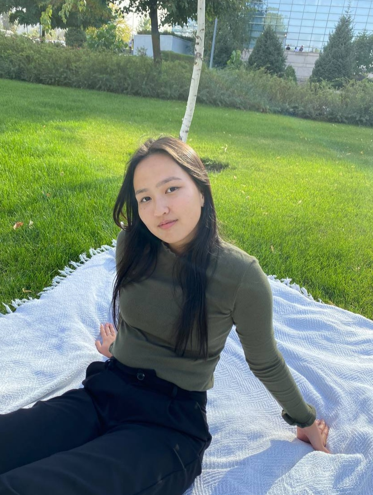

My name is Zhuldyz, I am 18 years old and I am a student of the Faculty of Information Security at the International University of Information Technology.
But actually, since school time I was fond of drawing and creativity in general. I for a long time went to art school and safely finished it in grade 10. But it so happened that I entered this specialty.
Also, I can't say that I am open-minded and like to be in the center of attention. But I very much appreciate time spent with my nearest and dearest people. I really enjoy reading manga and watching anime. And also recently loved reading books, especially classics in the romance and drama genre. I don't know what to do after graduation yet, but I want to tie my future with graphic design.